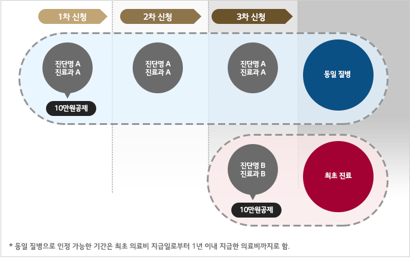

HR 제도안내
- HR 제도안내
- 복리후생
- 의료비 지원
의료비 지원
지원 대상 : 全 임직원 본인 및 배우자, 건강보험 등재 미혼자녀 (비상근 촉탁 및 일용직 제외)
지원 기준
지원 금액
| 대상 | 지원내용 | 년간 한도 |
|---|---|---|
| 본인 | 동일질병 본인 부담금 10만원 초과분 전액 | 2,000만원 |
| 배우자 | 동일질병 본인 부담금 10만원 초과분 전액 | 배우자/자녀 합산 1,000만원 | 자녀 | 동일질병 본인 부담금 10만원 초과분 전액 |
- 동일 질병이란 최초신청건과 동일한 진단명, 진료과인 경우를 의미함.
- 의료비 신청 Case
의료비 지원 기준
- 치료 목적으로 지출 된 비용 중 건강보험 급여대상(건강보험수가 적용 항목) 의료비의 본인 부담금
- 비급여 항목 중 예외적으로 지원 가능한 항목
- - 선택진료비
- - 입원 시 상급 병실료 차액의 50%
- - CT, MRI, 초음파 검사 등의 검사 (단, 검사 후 약 처방,의사 진료 등 치료행위가 병행된 경우에 한함)
- 치료 목적의 의료비라 함은 개인의 건강 이상으로 병원 진료 시 건강보험 급여 대상의 수술 및 처치료, 투약 및 조제료, 주사료, 재활 및 물리치료료 등의 비용이 발생한 경우를 의미함.
의료비 지원 제외 항목
- 의료비 영수증 상 전액 “비급여”로 분류된 항목은 미지원
- 일부 “비급여”로 분류된 항목 중 질병, 부상 치료를 하지 않는 것으로 판단되는 항목
| 구분 | 항목 | 비고 |
|---|---|---|
| 투약/조제료 | 비타민제 | |
| 비아그라 | ||
| 비만치료제 | ||
| 주사료 | 영양제 | |
| 예방접종 | ||
| 철분주사제 | 임신 관련 빈혈수치 저하는 의사소견서 (정상치·측정치 기재) 첨부 시 지원 | |
| 면역주사제 | ||
| 유착방지제 | ||
| 호르몬제 | ||
| 프롤로주사제 | ||
| 피부재생주사 | ||
| 히알루로니다제(=하이렉스주) | ||
| 마취료 | 무통주사(PCA) | |
| 처치/수술료 | 로봇수술 | 치료 세부내역에서 처치/수술료와 치료 재료대가 합산되어 있는 경우 치료 재료대 항목 확인 후 제외 |
| 디스크 시술 (경막 외 신경성형술, 수핵감압술 등) | ||
| 고주파 시술 (고주파 설근부 축소술/내시경술 등) | ||
| 맘모톰 | ||
| 레이저, 체외충격파시술, 근육내자극술 등 | ||
| 라식수술 | ||
| 교육P/G, 상담비용, 장치기구 | ||
| 재활 및 물리치료 중 비급여 항목 | ||
| 치료재료대 중 비급여 항목 | ||
- 업무나 일상생활에 지장이 없는 치료 및 수술 (재활 및 물리치료, 치료재료대, 미용/성형, 영양제, 예방접종, 건강진단, 검사 등)
- 치과, 한의원, 한방병원의 경우 건강보험 비급여 대상의 본인 부담금액
- 약국의 경우 의사 처방전에 근거하지 않은 단순 투약, 영양제 복용 등
- 단순피로 및 권태
- 불임 치료, 인공수정, 인공유산, 친자 확인을 위한 진단
- 보조기, 보청기, 의수·족, 의안, 콘택트 렌즈 등의 재료비
- 마약 중독 등 향정신성 의약품 중독증
- 산재, 자동차 사고, 제3자의 가해행위 등
신청 방법
- 신청 메뉴 : G-HR Portal > My HR > 복리후생 > 의료비 (신청 후 신청서 및 구비 서류를 준비하여 담당부서로 제출해야 함.)
- 청구 기한 : 의료기관(병·의원 및 약국)에 최초 의료비를 지급한 날로부터 1년 이내 신청⇒ 최초 의료비를 지급한 날 : 의료비 영수증 상 “진료일자”/약국 영수증의 “조제일자”
- 제출 서류
| 구분 | 서류명 | 비고 |
|---|---|---|
| 공통 | 의료비 신청서 | ㆍ 회사 양식 |
| 진료비 계산 영수증 | ㆍ 병원 양식(건강보험 수가 적용 여부 확인 가능한 서류) | |
| 약제비 영수증(의사 처방전 포함) | ㆍ 의사 처방전 미제출 시 지원 제외 | |
| 추가 | 진료비 세부 내역서 | ㆍ 영수증 상 비급여 주사료, 처치 및 수술료가 있는 경우 ㆍ 담당자의 별도 제출 요구가 있는 경우 |
| 의사 진단서 또는 의사 소견서 (진단코드/진단명 명시) |
ㆍ MRI 등 검사를 실시한 경우 | |
| 의사 소견서 | ㆍ 임신 시 철분제 주사 투여한 경우 : 임신으로 인한 빈혈 수치 저하 여부 (정상치/측정치) 기재되어 있어야 함. ㆍ 동일질병으로 인해 진료과 2개 이상 치료 받은 경우 |